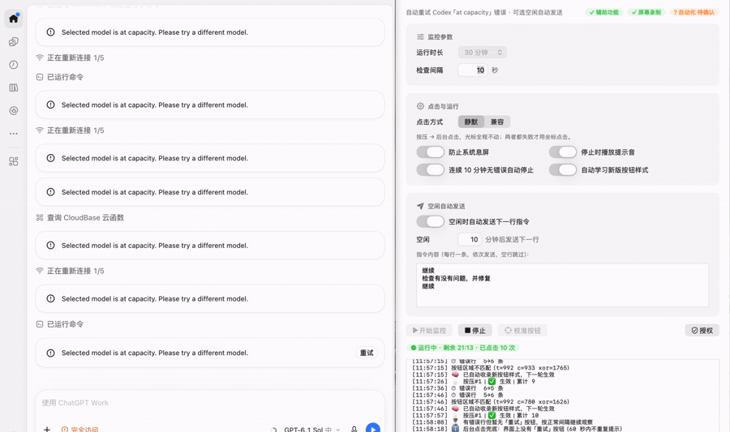

Codex 卡住了？
让它自己点「重试」。
Codex 弹出 Selected model is at capacity 时，RetryPilot 会找到「重试」按钮替你按下——光标不动、不抢焦点，任务在后台继续。
- 自动重试
- 后台静默
- 无人值守
- 完全离线
- 开源
brew install --cask yuxi1989/tap/codex-retrypilot

真实录屏，不是模拟：左侧 Codex 弹出容量错误，右侧自动完成点击。
问题
你创造，它重试。
给 Codex 安排一个长任务，转头去喝咖啡，回来发现它早就停在这一行：
Selected model is at capacity. Please try a different model.
更糟的是半夜卡住，第二天才发现几个小时白等。这个错误不会让任务失败，它只需要一次点击——而这一次点击，就是全部问题。
功能
一个小工具，解决一个烦人的问题。
自动重试
发现容量错误就自动点「重试」，点完还会确认真的生效。
静默后台
全程不动你的鼠标、不抢焦点，别的窗口照常干活。
额度等待
额度用完就暂停，等重置时间一到自动继续；一次性「重置使用量」机会留给你。
指令接力
空闲几分钟后自动发下一条指令，多步任务不用守着。
无人值守
自定义间隔和时长，到点自动停止，挂机就行。
可控与可见
运行日志一目了然，配置可导入导出。
点击方式
三层点击，前一层成功就不往后走。
兜底链其实是一份「失败清单」：拒绝合成按压的按钮、被其他窗口遮住的界面、重绘后失效的 Electron 无障碍树。
-
1
辅助功能按压
遍历 Codex 窗口结构，找到标题匹配「重试 / Retry / 重試」的按钮，直接 AXPress。屏幕上什么都不会动。
-
2
原生后台点击
按压无效时，把点击事件直接投递给 Codex 的进程 ID。依然不移动光标，窗口被遮挡也能点。
-
3
坐标点击兜底（仅兼容模式）
最后手段：先截图确认「重试」按钮真的在屏幕上，再点它的中心，点完把焦点还给你原来的窗口。
下载
不用编译，下载、拖进「应用程序」即可。
通用二进制，已通过 Apple 公证——双击即可打开。校验：shasum -a 256 -c SHA256SUMS.txt
三步装好
- 从 Releases 下载
.dmg，把应用拖进「应用程序」。 - 首次启动，按提示完成授权。
- 打开 Codex 桌面客户端，设置间隔与时长，点开始运行。
需要的权限，以及用途
| 权限 | 用途 |
|---|---|
| 辅助功能（必需） | 识别并点击 Codex 的重试按钮 |
| 屏幕录制（必需） | 坐标点击前确认按钮真的在屏幕上 |
| 自动化（可选） | 兼容模式下归还焦点 |
没有任何一项权限用于读取你的对话内容，数据也不离开本机。
隐私
不联网，不注册，不上传数据。
- 完全没有链接网络库，你可以用
otool -L自行验证 - 无遥测统计，无自动更新检查
- 无账号，无需 API Key
- Codex 会话、截图与日志都不会离开你的 Mac
- 配置就是本地一个 JSON 文件，位于
~/Library/Application Support/CodexRetry - Swift 原生实现，单个文件，零第三方依赖
常见问题
先回答最常被问的几件事
这算不算绕过 Codex 的容量限制？
不。它只在你自己的客户端里点一个按钮——没有 API key、没有代理、不改请求。服务真忙的时候它只能继续重试，等容量空出来任务才恢复。它变不出容量。
为什么需要「屏幕录制」权限？
只有一个用途：兼容模式下坐标点击之前，用截图确认「重试」按钮确实在屏幕上，避免盲点。默认的静默模式全程不截图。
会不会点到别的地方？
三层都要求先在无障碍树里找到标题匹配「重试 / Retry / 重試」的按钮；坐标点击还要额外通过截图确认。找不到就不点——宁可不动，也不盲点。
会影响我正常用电脑吗？
默认不会：光标不动、不抢焦点。只有兼容模式的坐标点击会短暂移动光标，点完立刻把焦点还给你原来的窗口。
指令队列会不会重复发送？
理论上可能，无法完全排除：通过无障碍接口无法 100% 确认输入框已清空，所以队列里的指令最好写成幂等的——重复发一条也不会把事情弄坏。
有 Windows 或 Linux 版吗？
没有。整套方案建立在 macOS 辅助功能接口上，移植等于重写，我目前也没有这个需求。
为什么要做这个？
因为 Codex 很能干，但偶尔也会罢工。一条临时的容量提示，不该让几个小时的任务停在那里等人。它不是什么复杂的软件，只是替你做一件重复又烦人的事：当 Codex 卡住时，帮你再试一次。整个项目由 WorkBuddy 辅助开发，没有手写过一行代码。